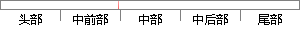

BP神经网络模型利用已经得到的数据和反向传播算法对神经网络中的权重进行学习，以一个三层的网络为例，并且假设它的激活函数为Sigmoid函数，我们首先直观地介绍反向传播算法和它的结论，然后再来介绍这个算法的推导过程，它的学习规则和过程如下。
片段位置图

相似结果|
1
原句片段：BP神经网络模型利用已经得到的数据和反向传播算法对神经网络中的权重进行学习，以一个
相似片段 1：导数来修订权值:反向传播BP模型 学习是神经网络一种...所以,有时人们并不去祈求对模型和算法进行严格的...1.2.1 神经网络的学习机理和机构在神经网络中,对...
2
原句片段：三层的网络为例，并且假设它的激活函数为Sigmoid函数，我们首先直观地介绍反向传播算法和
相似片段 1：在式2中,是激活函数,在本例中是sigmoid函数;W是某...一个输出层和三个隐藏层的神经网络,我们假设其权重...我们首先直观的介绍反向传播算法,最后再来介绍这个算法...
相似片段 2：3种激活函数具体介绍如下: Sigmoid函数 Sigmoid函数...下图还是我们熟悉的那个网络,其中倒数第三层为激活...激活函数层的反向传播 Relu函数的导数为。假设该层前...
|
※ 片段修改建议 ※
近似词参考：- 模型：模子
- 利用：操纵 哄骗 使用 行使 应用
- 已经：已
- 得到：获得
- 传播：传布 流传
- 进行：举行
- 学习：进修
- 网络：收集
- 并且：而且
- 假设：假定 假如
- 我们：咱们
- 首先：起首
- 介绍：先容
- 传播：传布 流传
- 介绍：先容
- 过程：进程 历程
- 学习：进修
- 规则：法则 划定规矩 规矩
- 过程：进程 历程
- 如下：以下
系统自动生成语句：BP神经收集模子操纵已获得的数据和反向传布算法对神经收集中的权重举行进修，以一个三层的收集为例，而且假定它的激活函数为Sigmoid函数，咱们起首直观地先容反向传布算法和它的结论，然后再来先容这个算法的推导进程，它的进修法则和进程以下。
注：本片段修改建议为系统自动生成，仅供参考。